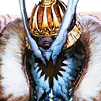

- 12/11
- 遊戲更新公告(12/11 17:00實施)
非常感謝您的使用。
這裡是「Fate/Grand Order」營運團隊。
已在下列時間，進行了遊戲更新。
另外，本次的遊戲更新不包含程式的更新。
更新之後猜測可能會有因連線集中，導致感到遊戲的動作延遲的情況。
屆時還請多加嘗試。
對應時間
2019年12月11日(三) 17:00
◆有關從者真名的注意◆
在2018年12月31日(二) 23:00以後新配信的主線故事及期間限定活動、一部份關卡、宣傳活動及召喚中，會顯示隱藏真名的對象從者真名。
※2018年12月31日(一) 22:59前已經配信的主線故事、復刻活動、一部份關卡中不在此限。
※本公告中，會記載隱藏真名的對象從者真名。
對應內容
▼遊戲的更新
1.『「Lostbelt No.5 神代巨神海洋 亞特蘭提斯 擊落神之日」開幕前夕宣傳活動』的開始
2.「幕間物語宣傳活動 第11彈」的開始
3.聖晶石召喚(期間限定)「幕間物語宣傳活動第11彈Pick Up召喚(每日交替)」的開始
4.特定的從者的幕間物語追加
※對象從者如下。
・ 第1節
第1節
・ 第1節
・ 第1節
・ 第1節
第1節
・ 第1節
第1節
・ 第1節
第1節
・ 第1節
▼問題的修正
1.由於遊戲引擎更新造成的圖像及聲音問題修正
※對象從者如下。
・Archer・地獄(巴御前)
・阿斯托爾福(Rider)
・天草四郎
・阿爾托莉亞・潘德拉剛(Saber)
・阿爾托莉亞・潘德拉剛(Lancer)
・牛若丸(Assassin)
・弗拉德三世〔EXTRA〕
・奧茲曼迪亞斯
・高文
・吉爾伽美什(Caster)
・坂田金時(Berserker)
・齊格飛
・豹人
・貞德・Alter・聖誕・Lily
・酒吞童子(Assassin)
・諸葛孔明〔艾梅洛Ⅱ世〕
・斯卡哈(Assassin)
・鈴鹿御前
・殺生院祈荒
・謎之女主角X(Assassin)
・謎之女主角X〔Alter〕
・哪吒
・尼祿・克勞狄烏斯(Caster)
・土方歲三
・不夜城的Caster(雪赫拉莎德)
・弗蘭肯斯坦(Saber)
・弗蘭肯斯坦(Berserker)
・貝德維爾
・寶藏院胤舜
・瑪琇・基利艾拉特
・瑪爾大(Ruler)
・源賴光(Berserker)
2.特定的關卡中，敵方從者的寶具演出未正常顯示的問題修正
※對象關卡如下。
・第六特異點 主線關卡
・亞種特異點Ⅲ 主線關卡
・幕間物語 源賴光(Berserker) 第1節
3.一部份關卡的戰鬥中，在一部份敵人進行特定攻擊時，攻擊特效會有未正常顯示情況的問題修正
※對象關卡如下。
・Lostbelt No.1 主線關卡
・期間限定活動「クリスマス2019 南丁格爾的クリスマス・キャロル」 主線關卡
4.特定從者的待機時動作未正常顯示的問題修正
※對象從者如下。
・ 5.特定的從者中，戰鬥角色的一部份圖像會有未根據靈基再臨階段正常顯示情況的問題修正
5.特定的從者中，戰鬥角色的一部份圖像會有未根據靈基再臨階段正常顯示情況的問題修正
※對象從者如下。
・
▼遊戲的修改
・特定從者的語音清單更新
※對象從者如下。
・
今後也請多多指教「Fate/Grand Order」。